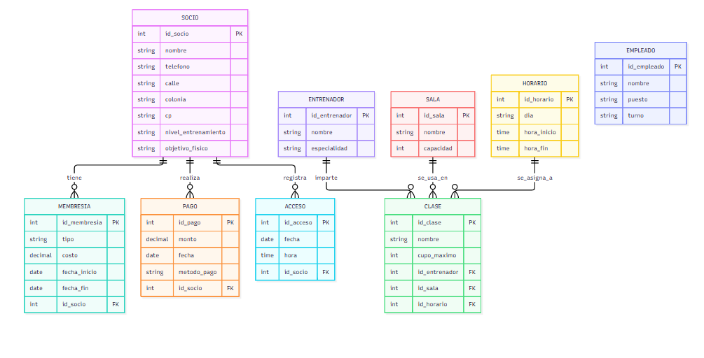
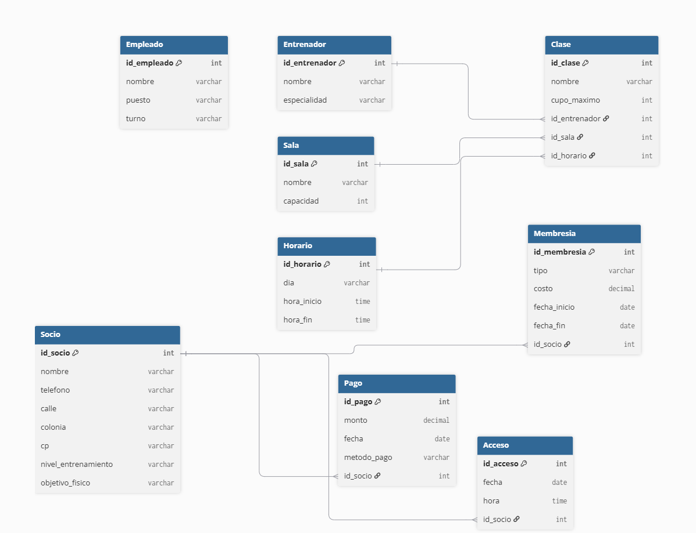

El gimnasio necesita un sistema que le permita gestionar el acceso de sus socios, el control de sus membresías, el registro de pagos, la asignación de clases y el control de su personal. Actualmente el control se lleva en hojas de cálculo y libretas, lo que dificulta saber quién está al corriente con sus pagos, qué clases tienen cupo y qué entrenadores están asignados. El sistema debe resolver estas necesidades mediante una base de datos relacional que refleje fielmente las reglas del negocio.


Repositorio del equipo practica 3.1